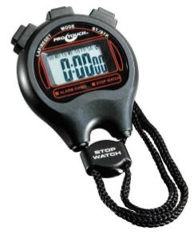
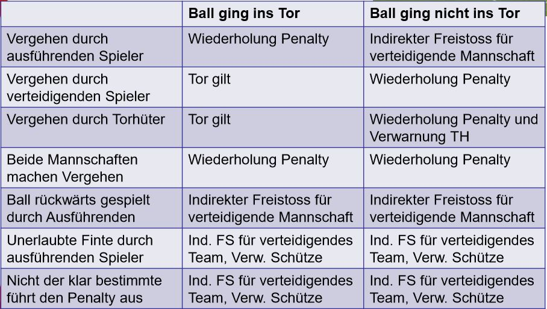
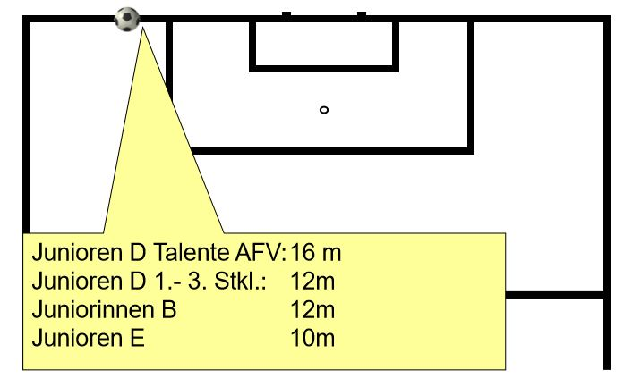
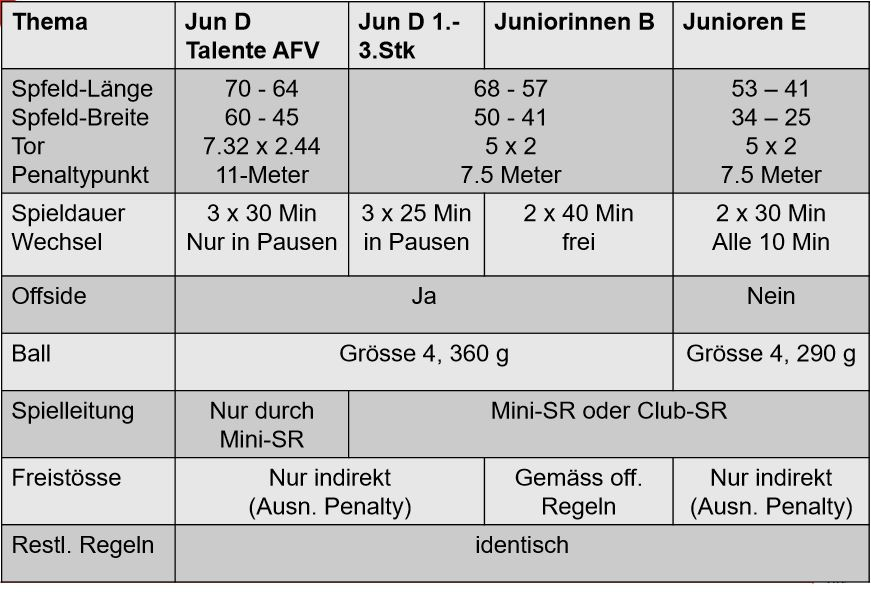

Während dem Spiel
Spieler
Ein Spiel kann nur ausgeführt werden, wenn es genügend Spieler auf dem Platz hat.
Mit der folgenden Tabelle kann man sehen, wie viele Spieler es braucht, um ein Spiel zu starten bzw. abzubrechen:

Ein vor dem Spielbeginn ausgeschlossener Spieler kann ersetzt werden.
Zeit

E-Junioren
2 x 30 Minuten
Pause 5 Min
Spielerwechsel (mind. 2) alle 10’ auf Pfiff des SR (Ausnahme Verletzungen)
D-JuniorInnen (Talente)
3 x 25 Minuten (3 x 30 Minuten)
Pause jeweils 5 Minuten (5-10 Minuten)
Nachspielzeit: nur bei langen Verletzungsunterbrüchen Wechsel nur in Pausen (Ausn. Verletzung)
B-Juniorinnen
2 x 40 Minuten
Pause 10 Minuten
Nachspielzeit: nur bei langen Verletzungsunterbrüchen
Pfiff des Schiedsrichters
Der Pfiff ist das wichtigste bei einem Schiedsrichter. Es entscheidet, wie das Spiel weitergeht.
Der Pfiff ist bei folgenden Situationen notwendig:
- Zum Anstoss
- Bei Regelverstössen(Foul, Hands)
- Zur Strafstossausführung (Penalty)
- Nach längerem Spielunterbruch
- Nach Abschreiten der 6m Distanz
- Bei Auswechslungen
- Bei Ende der Spielzeithälften
Beim Pfiff ist auch die Gestik dabei wichtig. Dabei gibt es verschiedene Stellungen:

Beim Auswechseln hast du keine Fahne. Du drehst deine Hände 2-3 Mal über deinen Kopf
Beginn und Fortsetzung des Spiels
Beim Pfiff des Schiedsrichters wird das Spiel meistens unterbrochen.
Dabei gibt es bestimmte Regeln für bestimmte Fortsetzungen:
Ausführungsbestimmungen für den Anstoss:
- Alle Spieler in der eigenen Spielfeldhälfte
- Gegenspieler mindestens 6m vom Ball entfernt (ausserhalb des Kreises)
- Ball liegt ruhig auf dem Mittelpunkt
- Pfiff als Zeichen zum Spielbeginn
Bei sonstigen Fortsetzungen (Abstoss, Freistoss) ist der Ball im Spiel, wenn er:
- mit dem Fuss gespielt worden ist
- sich in irgendeine Richtung sichtbar bewegt hat
Wenn der SR eine Entscheidung getroffen hat UND das Spiel mit der getroffenen Entscheidung wieder aufgenommen wurde oder eine Halbzeit beendet wurde,
kann nicht mehr auf die Entscheidung zurückgekommen werden
Schiedsrichterball
Der Schiedsrichterball wird ausgeführt wenn:
-
ohne dass ein Spieler die Spielregeln verletzt hat
und der Ball das Spielfeld verlassen hat - ein Spieler verletzt ist und gepflegt werden muss
- ein Hund auf das Spielfeld kommt und das Spiel stört
- ein zweiter Ball auf dem Spielfeld ist und das Spiel stört
- ein Spieler ausserhalb des Feldes eine strafbare Handlung begeht
Es kann direkt Kein Tor erzielt werden! (Erst nach Berührung durch den 2. Spieler)
Standbälle
Freistoss
Nach einem Foul ausserhalb des Strafraumes wird ein Freistoss ausgeführt.
Es gibt zwei Arten
- Direkter Freistoss
- Indirekter Freistoss
Beim Direkten Freistoss kann man:
- direkt ein Tor erzielen
- direkt kein Eigentor erzielen
Beim Indirekten Freistoss kann man:
-
direkt ein Tor erzielen, wenn der Ball nach der Ausführung
von einem anderen Spieler berührt wurde, bevor er über die Torlinie geht
Falls der Ball direkt ins Tor geht, gibt es Abstoss. - direkt kein Eigentor erzielen

Penalty
Nach einem Foul im Strafraum wird ein Strafstoss (Penalty) ausgeführt
Ausführung:
- Ball wird auf die Strafstossmarke gelegt
- Ausführender Spieler muss klar identifiziert sein
- Torwart muss auf der Torlinie bleiben, bis der Ball mit dem Fuss gespielt wurde
- Der Ball ist im Spiel, wenn er mit dem Fuss gestossen wurde und sich sichtbar bewegt hat
- Er darf den Ball erst wieder spielen, wenn er von einem anderen Spieler berührt wurde
Alle anderen Spieler müssen
- innerhalb des Spielfeldes
- ausserhalb des Strafraumes
- ausserhalb des Strafraumes
- hinter dem Strafstosspunkt

Entscheid bei Vergehen?

Einwurf
Wenn der Ball über die Seitenlinie ins Aus geht, wird ein Einwurf ausgeführt:
Ausführung:
- Gesicht dem Spielfeld zuwenden
- Beide Beine am Boden
- Ball mit beiden Händen werfen
- Ball von hinten über den Kopf werfen
- Ball dort einwerfen, wo er das Spielfeld verlassen hat
- Er darf den Ball erst wieder spielen, wenn er von einem anderen Spieler berührt wurde
Bei Verstössen:
D-Junioren: Der Einwurf wird von der gegnerischen Mannschaft ausgeführt (im Kinderfussball nicht zu kleinlich sein)
E-Junioren: Es wird dem Spieler gezeigt, wie es richtig geht und Wiederholung durch gleiche Mannschaft
Alle Gegenspieler haben einen Abstand von 2 Meter zum einwerfenden Spieler einzuhalten.
Bei Missachtung wird der Einwurf wiederholt
Abstoss
Es gibt keinen Abstoss: Der Ball wird durch den Torhüter eingeworfen
oder am Boden gerollt und dann gekickt.
Auskick oder Dropkick nicht erlaubt
Bei Verstoss: Indirekter Freistoss für Gegner auf der Mittellinie (D-Junioren) oder Mittelpunkt (E-Junioren)
Eckball

D-Junioren 1.-3. Stärkeklasse und B-Juniorinnen: Der Eckstoss erfolgt aus 12m Entfernung vom näheren Torpfosten.
D-Junioren Talente:
Der Eckstoss erfolgt aus 16 m Entfernung vom näheren Torpfosten.
E-Junioren:
Der Eckstoss erfolgt aus 10 m Entfernung vom näheren Torpfosten.
Zusammenfassung Standbälle

Abseits
Die Abseitsregel ist die beliebteste, umstrittenste und die am meiste erwähnte Regel im ganzen Fussball!
Der Abseits ist deshalb so wichtig, weil diese Regeln sogar Titelsieger ausmachen kann, wenn man nicht hinschaut.
Deshalb ist es gut zu wissen, wann man auf Abseits entscheiden muss.
Wenn die folgenden Punkte mit der Situation passen, ist es Abseits:
- in der gegnerischen Spielfeldhälfte
-
Spieler näher der gegnerischen Torlinie als der Ball
(Nur mit den Körperteilen, mit denen man ein Tor erzielen kann = Hand zählt nicht!) - weniger als 2 gegnerische Spieler zwischen sich und der Torlinie
- Zuspiel von einem Mitspieler
Die Beurteilung erfolgt immer im Moment der Ballabgabe
Ein Spieler wird aber nur für seine Abseitsposition bestraft, wenn er:
- ins Spiel eingreift
- einen Gegner beeinflusst
- aus seiner Stellung einen Vorteil zieht
Keine Regel ohne Ausnahme! Es gibt kein Abseits beo folgenden Situationen:
- Einwurf
- Abstoss
- Eckball
Die Spielfortsetzung erfolgt durch einen indirekten Freistoss von dort, wo das Abseits geahndet wird
Zeitstrafen
Wenn ein Spieler eine Zeitstrafe erhält, dann kann der Spieler eine Strafe bekommen.
Es gibt entweder 5-Minuten-Zeitstrafen oder einen Platzverweis
5-Minuten-Zeitstrafe
Ein Spieler bekommt eine Zeitstrafe von 5 Minuten, wenn er:
- Sich unsportlich verhält
- Durch Worte oder Handlungen seine Ablehnung zu erkennen gibt
- Überhart spielt
- Die Aufnahme des Spiels verzögert
- Beim Eckstoss oder Freistoss den vorgeschriebenen Abstand nicht einhält
-
Im eigenen Strafraum zum Verhindern einer klaren Torchance den Ball zu spielen versucht,
jedoch ein Foulspiel begeht, für das ein Penalty gegeben wird.
Platzverweis B-Juniorinnen und D-Junioren Talente
Ein Spieler wird des Feldes verwiesen, wenn er:
-
Im eigenen Strafraum ein Tor oder eine offensichtliche Torchance der gegnerischen Mannschaft
unsportlich (halten / stossen / Handspiel, keine Chance auf Ball) verhindert
(gibt rot trotz Penalty) -
Einem auf sein Tor zulaufenden Gegenspieler ausserhalb des eigenen Strafraums
eine offensichtliche Torchance nimmt - Eine 2. Zeitstrafe im selben Spiel erhält
Platzverweis E-Junioren und D-Junioren
Ein Spieler darf nicht ersetzt werden, wenn er:
- eine grobe Unsportlichkeit (schlagen, spucken, werfen) begangen hat
- eine Tätlichkeit begangen hat
- eine Tätlichkeit begangen hat
In allen Kategorien des Kinder- Fussballs werden KEINE Karten gezeigt
Alle Unterschiede
In der folgenden Tabelle sind noch einmal alle Regeln während des Spiels aufgelistet:
